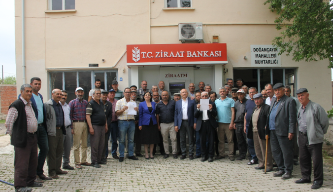
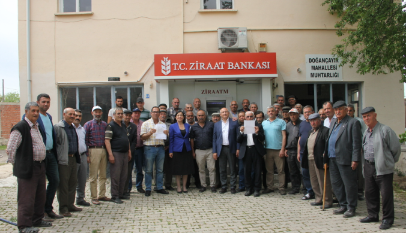

Doğançayır, Türkiye'nin Eskişehir ili, Seyitgazi ilçesine bağlı bir mahalledir. Nüfusu 774’tür (2022). 2013’te belde statüsünden mahalleye dönüşmüştür. Eski adı Arapören.
Konum
Eskişehir’e ~50 km, Seyitgazi’ye 26 km. Eskişehir–Ankara yolu Hamidiye kavşağına 10 km.
Coğrafya
Yerleşim, Kırkkız Dağı’nın eteğinde; içinden Seydisuyu geçer, iki köprü ile yakalar bağlanır. Çatıören Barajı sonrası geçiş kolaylaşmıştır.
Ekonomi
Ağırlıkla tarım ve hayvancılık. (Şeker pancarı, buğday, ayçiçeği, yonca.)
Kültür
Alevi ağırlıklı yerleşim; Sünni kökenli sakinler de vardır. 3 Haziran Nâzım Hikmet Anması ile bilinir.
Tarihçe
Köyün yaslandığı Kırgız (Kırkkız) Dağı, Kütahya–Eskişehir Savaşı’nın son noktalarından biri olarak anılır. Sakarya Savaşı sonrasında Afyon–Eskişehir hattına çekilen Yunan birliklerinin kuzeydeki direnek noktası olmuştur. Büyük Taarruz’a kadar yaklaşık bir yıl boyunca halka yoğun şekilde eziyet edilmiş, dağın ormanları yakılmıştır.
 
